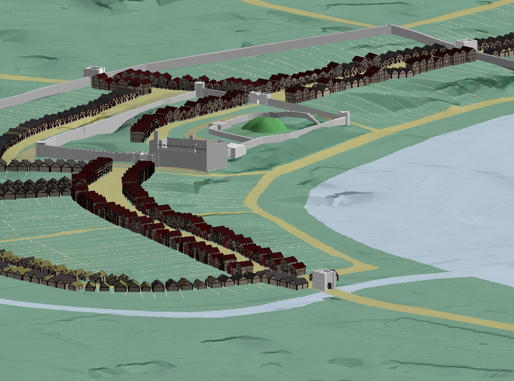
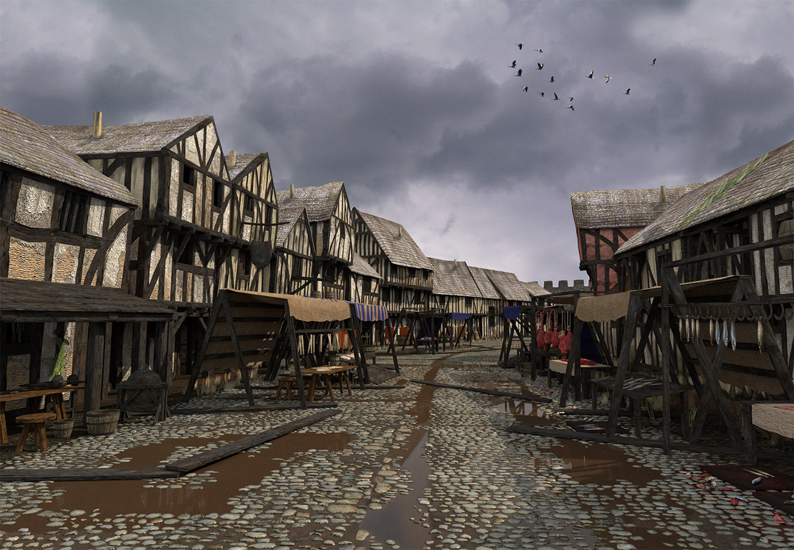
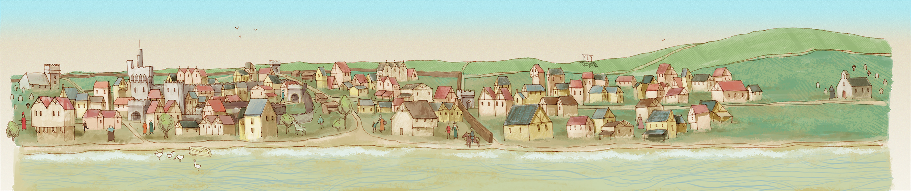
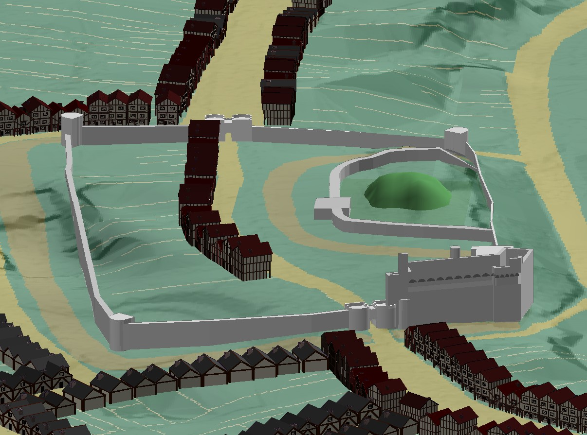
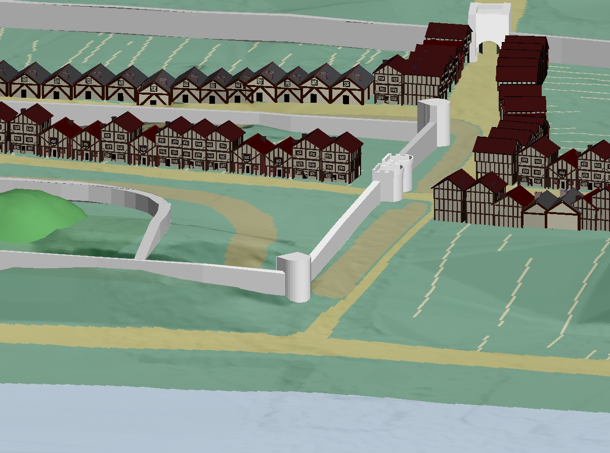
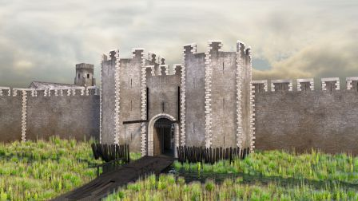
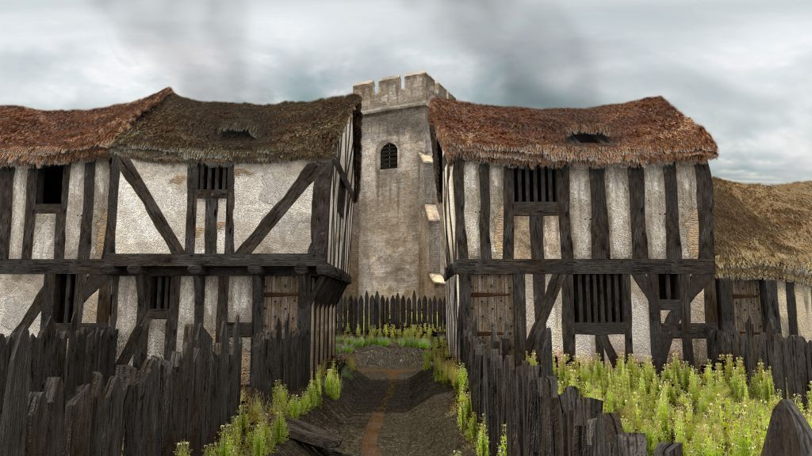

Visualisations
|
 View of medieval Swansea from the south |
 View north from Wind Street towards the Castle (Lorenzo Caravaggi) |
One of the key aims of the City Witness project has been to reconstruct the urban landscape of medieval Swansea, and to explore the sight-lines of witnesses to the hanging of William Cragh within the medieval town.
Computer-generated visualisation of historic landscapes and buildings remains a controversial area in academic research. While virtual reconstructions of past places can help us to engage imaginatively and immerse ourselves in history, there is also the potential for them to go beyond the evidence base we have, to introduce assumptions or clichés about the medieval past, and to obscure the scholarly processes – and hypotheses – by which they were produced. Agreements such as the London Charter have attempted to find a model of ‘best practice’ for the production of visualisations based on scholarly research.
Visualising medieval Swansea is a challenge. Very little evidence survives for the appearance of its early buildings. As City Witness is primarily an academic research project, it’s important that we only show what can be supported by the evidence itself. But the conservative, visually-simplistic renders produced by this method may be less engaging for many viewers. More creative, imaginative interpretations of the evidence (drawing on, for example, analogy with other towns where medieval buildings do survive) can offer an alternative, more visually arresting view.
Our solution has been to embrace the idea of multiple, varying perspectives which is foregrounded by the medieval witness statements themselves. On this page you can see a variety of different views of medieval Swansea:
1. Schematic views, showing what we can recover from the archaeological evidence (via our GIS research), but with little imaginative addition
2. Interpretative views, also based on our GIS research, but with some imaginative extension
3. Freer artistic views, loosely based on our GIS research (these images are also the basis for medieval Swansea in our interactive Game)

Artist's view of medieval Swansea from the river, produced by Make Sense Design as part of our computer game
|
 Old and New Castles |
 View from the River Tawe, looking towards the West Gate |
|
 View towards Wassail Gate with St Mary's Church beyond (Lorenzo Caravaggi) |
 View towards St Mary's Church (Lorenzo Caravaggi) |